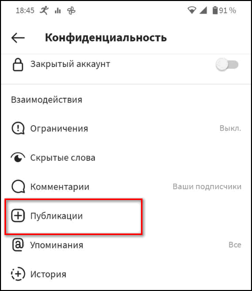
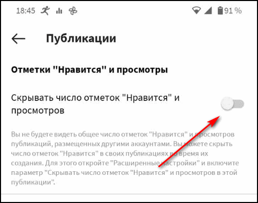
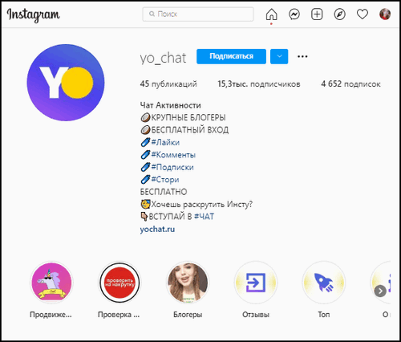
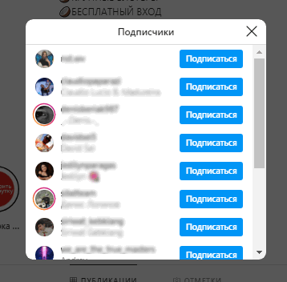

Как проверить чужой Инстаграм аккаунт на накрутку и ботов

- ТОП-10 сервисов проверки на накрутку
- 5 способов проверить накрутку чужого аккаунта вручную
- Наблюдение за аккаунтом
- Всплески лайков и комментариев на отдельных постах
- Участвовал ли аккаунт в чатах активности
- Бегло просмотреть подписчиков, вычисляем накрутку
- Анализ и статистика своего аккаунта
- На что влияет накрутка в Инстаграме*
- Как защитить профиль от накрутки в дальнейшем
Проверить Инстаграм* аккаунт на накрутку возможно через сторонние сервисы, через ручной ввод и статистику в профиле. Проверка необходима перед запуском рекламы, поиском блогеров.
ТОП-10 сервисов проверки на накрутку
Чтобы проверить аккаунт в Инстаграме* на ботов бесплатно или за небольшую плату, можно удалить аккаунты ботов после проверки. Перечень сервисов, которые можно использовать для проверки накрутки и статистики аккаунта:
| Название: | Тариф: | Особенности: |
| Topnakrutok | от 0 до 500 рублей | есть три первые проверки бесплатно (использую лично и для клиентских проектов) |
| SpamGuard | от 499 до 4999 рублей | Точные данные, умное сканирование, много параметров для проверки (использую лично) |
| LiveDune | от 600 до 7200 рублей | 7 дней (использую лично) |
| trendHERO | до 99$ долларов в месяц | тариф с минимальным функционалом |
| Fakelikeinfo | от 900 до 5999 | первая проверка, до 500 подписчиков (не используем в работе) |
| Yoloco | от 2900 до 39000 | первая проверка, не точные данные (не используем в работе) |
| AdLover | 1500 рублей | до 5 запросов анализа, но ценник дорогой |
| Nativeflow.io | от 2500 до 100 000 | нет |
| hypeauditor.com | до 399$ долларов | бесплатный тариф отсутствует, слабый функционал |
| Affable.ai | тарифы можно узнать у технической поддержки | не прозрачная работа сервиса |
Среди предложенных вариантов можно выбирать один из сервисов и опробовать бесплатный период. В большинстве, дорогие тарифы предложены для компаний и брендов.
5 способов проверить накрутку чужого аккаунта вручную
Самостоятельно проверить, была ли накрутка на странице – не просто. Дело в том, что Инстаграм* постепенно повышает степень конфиденциальности данных, позволяя авторам скрывать список лайков и некоторые комментарии. Также недоступна статистика, где можно увидеть реальные данные. Как проверить самостоятельно:
- наблюдение за страницей. Достаточно одной недели, чтобы понять уровень активности на странице. Для простоты наблюдений ведут отдельную таблицу, где записывают наблюдения и изменения;
- посмотреть, не было ли недавно конкурсов, Give Away и розыгрышей. Они повышают активность на странице, но временно. По завершению появятся отписки, а уровень вовлеченность серьезно снизится до первоначальных показателей;
- чаты активности. Чтобы проверить участие пользователя, нужно посмотреть популярные чаты или же посмотреть комментарии. Обычно, отзывы одинаковы или появляются ответы от одних и тех же авторов, которые развивают блог в примерно таком же направлении;
- если запланирована реклама – попросить у блогера или его менеджера статистику;
- аккаунты с отзывами на блогеров. Там пишут обзоры те, кто уже сотрудничал с автором;
- посмотреть список подписчиков. Если половина с недоступными аккаунтами, без описания и аватарки – это накрученные боты и фейки.
Использовать сервисы для наблюдения проще, но во многих есть ограничения по количеству проверок и объему аудитории. Поэтому, заказывая постоянно рекламу у блогеров, нужно выбрать одну из платформ и подписаться на недорогой тариф.
Наблюдение за аккаунтом
Организовать наблюдение за аккаунтом можно по нескольким направлениям:
- количество опубликованный постов за неделю;
- выпущенные Истории и взаимодействия с ними;
- комментарии на последних записях, скорость их появления;
- рост подписчиков.
Органический прирост в аудитории за неделю составляет:
| Изначальный размер блога: | Прирост подписчиков: | Отписавшиеся: |
| до 10 000 | + 500-1000 | - 300 - 500 |
| до 50 000 | + 1000-2000 | - 500 - 700 |
| до 100 000 | + 5000 - 6000 | - 1000 -3000 |
Если автор не участвует в конкурсах или не запускал промоакции – данные будут похожи на приведенные выше. При проведении Give Away или подобных мероприятий, объем подписчиков повышается до 5000 в неделю с учетом изначальных 10 000. Наблюдение за аккаунтом также включает проверку комментариев. В крупном блоге, где есть минимум от 100 000 подписчиков, отзывы под новыми постами появятся за первые 5-10 секунд. На это влияет тематика (подписчики менее активно реагируют на рекламные записи), снимок и время размещения.
Всплески лайков и комментариев на отдельных постах
Если на странице, за последние 24 часа, стали внезапно появляться комментарии и лайки – возможно профиль поставили на накрутку. Посмотреть количество отметок «Мне нравится» в новой версии можно таким способом:
- Зайти в Инстаграм* – Мой профиль.
- Нажать по трем полоскам сверху – Настройки.

- Конфиденциальность – Публикации.

- Скрыть список лайков – переместить в статус «Неактивен».

Теперь можно посмотреть, какое количество отметок «Мне нравится» под каждым постом. Чтобы проанализировать аккаунт:
- Взять последних пять постов – посмотреть количество лайков под ними.
- Перейти к ранним записям – зафиксировать количество отметок там.
- Сравнить показатели.
То же касается и комментариев. Если у автора был внезапный всплеск активности, это может значить:
- реклама у другого блогера или запущенная промоакция;
- накрутка, если комментарии одинаковы или написаны по шаблону;
- участие в конкурсах.
Проверить наличие рекламы возможно через глобальный поиск, воспользовавшись ником. Нужно ввести никнейм блогера и посмотреть, были ли последние публикации с упоминанием его страницы.
Участвовал ли аккаунт в чатах активности
Чаты-активности – это один из способов, как продвигаться. Его используют владельцы небольших и средних блогов, чтобы поднять активность и найти других авторов, которые делают контент по смежной тематике. Недостаток таких чатов для рекламодателей – несоизмеримо завышенная активность и вовлеченность от нецелевой аудитории. То есть, заказав рекламу у такого блогера, рекламодатель вряд ли получит требуемую вовлеченность, клиентов. Как проверить участие в чатах активности:
- Перейти в Инстаграм* в блог @yo_chat

- Посмотреть, нет ли автора нужной страницы в подписчиках.
Второй способ, более практичный – перейти к комментариям и посмотреть, сколько других блогеров оставляют отзывы. Далее, нужно перейти к аккаунтам этих пользователей и открыть отзывы. Там проверить нужный профиль в виде комментатора.
Обычно, в чатах активности участвуют от 10 до 100 блогеров, которые постоянно обмениваются новыми идеями и способами продвижения. Если участие в таком чате не влияет на остальное количество комментариев – значит можно сотрудничать, но предварительно проверить вовлеченность.
Бегло просмотреть подписчиков, вычисляем накрутку
Проверка качества аккаунта в Инстаграме* начинается именно с определения накрутки. Это пагубный способ продвижения страницы, который к тому же, меняет целевую аудиторию. По завершению, автор получает «большую цифру» в подписчиках, но низкую вовлеченность. Определить накрутку через подписчиков:
- Перейти в аккаунт в блогеру – нажать по разделу: «Подписчики».

- Пролистать список – выделить количество страниц, где не указана личная информация.
Обычно, боты выделяются тем, что у них нет личных снимков, мало подписчиков, но много подписок. Если установлена накрутка на комментарии и лайки, то среди отзывов будут однотипные тексты. Или те, которые не соответствуют тексту публикации.
Особенность ботов в том, что все они находятся в разных странах и не проявляют «живой» активности. Следовательно, рассчитывать на заказы от такой аудитории или вовлеченность в рекламу – не стоит. Просмотры будут, но минимум переходов по ссылкам и в аккаунт партнера.
Анализ и статистика своего аккаунта
Случается, что на своей странице можно заметить внезапный прирост аудитории. Это касается не только блогеров, но и профилей рекламодателей. Если автор заметил, что его число подписчиков постепенно увеличивается вне зависимости от темы публикаций – нужно проанализировать аккаунт, обратившись к статистике. Как работает статистика в Инстаграме*:
- полный список данных доступен при достижении 100 подписчиков;
- отображает геолокацию аудитории, половую принадлежность и время активности;
- показывает прирост подписчиков, отписку;
- есть отдельная аналитика по каждой публикации, Истории.
Но чтобы проверить свой аккаунт, нужна полная статистика по параметру: «Аудитория» и данные по последним трем публикациям. Определить блогеру, что есть накрутка:
- Зайти в свой профиль – нажать сверху три полоски.
- Статистика – Аудитория.
- Посмотреть, сколько добавилось и удалилось за последнюю неделю.
- Перейти к общему показателю вовлеченности – посмотреть, какие публикации были наиболее популярны у аудитории.
Если на последних нескольких записях внезапно выросла активность и места перехода: «Другое», значит на аккаунте была накрутка. При органическом приросте будут выделены пункты: «Рекомендации», «Хештеги», «Геолокация».
На что влияет накрутка в Инстаграме*
Накрутка в Инстаграме* влияет на количество подписчиков, создавая иллюзию высокой активности и крупного комьюнити. Но главная задача блогера при продвижении – правильно выбрать целевую аудитории, определив по геолокации, половой принадлежности и возрасту. Что получает автор страницы, установив на профиль накрутку:
- подписчиков из разных стран и городов. Которые зачастую используют другой язык, отличный от основного в блоге;
- неактивную аудиторию, которая не планирует взаимодействовать с контентом и «доверять» лидеру мнений;
- разброс в половой принадлежности и возрасте. Определить, на какую ЦА рассчитывать невозможно.
К тому же, восстановить страницу после накрутки не получится. Это работает лишь в случаях, когда владелец профиля уже собрал свыше 100 000 подписчиков самостоятельно, и «добавил» с помощью накрутки еще тысяч 20.
При проверке статистики у такого автора будут завышенные показатели, но они не соответствуют реальному положению. Если запустить тестовый макет, то с вероятностью в 70% он не окупится.
Как защитить профиль от накрутки в дальнейшем
Полностью обезопасить страницу получится лишь в том случае, если пользователь сделает блог «закрытым». В остальных же ситуациях: нужно регулярно отслеживать активность. Особенности накрутки:
- можно установить на аккаунт, к которому нет личных данных. Сервисы поддерживают систему «безопасного входа», не требуя от заказчиков привязки;
- работает ровно столько, сколько за него заплатили;
- техническая поддержка Инстаграма* реагирует только на факт автоматизированных действий. Это значит, что писать и доказывать, что накрутка не была установлена автором – смысла не имеет.
Главный недостаток накрутки – страницу могут заблокировать или добавить в «теневой банк». Преимущество: конкуренты редко пользуются таким способом. Потому что проще настроить рекламную акцию на своем аккаунте, чем оплачивать снижение активности в чужом профиле. Заметив накрутку, лучше снизить количество публикаций в неделю. Это защитит блог от блокировки и «теневого бана». Также, нужно сменить постоянные теги, используемые геолокации. Если же накрутка продолжается, по личным хештегам появляются чужие посты – можно обращаться к администрации с пометкой «кибербуллинг».


Интересное и познавательное.
Я пишу стихи
Мой Инстаграм 340 человек и я не стремлюсь к быстрому набору людей. На стихи ру, меня читают 9.2 k